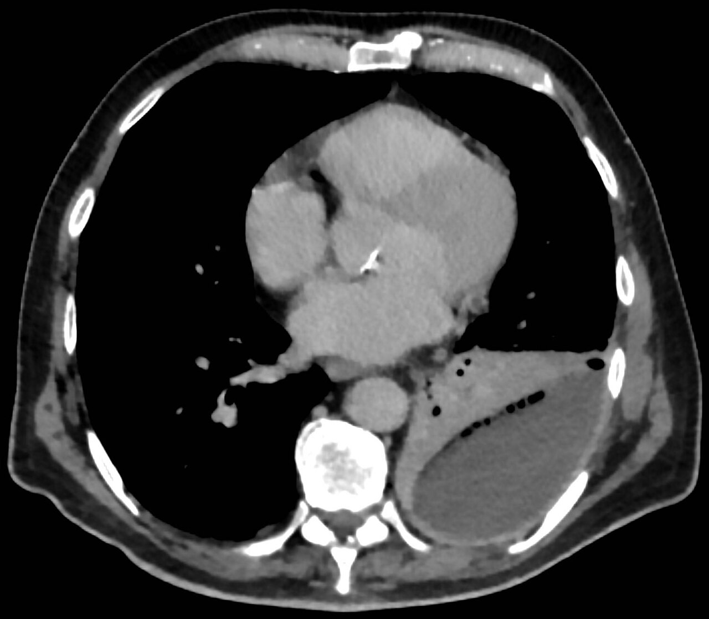

Ficha del catálogo
Empiema pleural
- Sistema
- Respiratorio
- Modalidad
- TC
- Región
- Pleura
- Dificultad
- Intermedio
Colección purulenta en el espacio pleural, habitualmente complicación de una neumonía. Su reconocimiento es importante porque requiere drenaje además de antibióticos. La tomografía con contraste diferencia el empiema del absceso pulmonar y valora si la colección está tabicada.
Técnica
Tomografía de tórax con contraste intravenoso en fase venosa. El ultrasonido a pie de cama complementa detectando tabiques y guiando el drenaje.
Qué observar
- Colección pleural lenticular con ángulos obtusos respecto a la pared torácica
- Realce y engrosamiento de ambas hojas pleurales con separación entre ellas
- Aumento de densidad de la grasa extrapleural adyacente
- Tabiques y ecos internos en el estudio ecográfico
- Compresión y desplazamiento del parénquima pulmonar adyacente
- Burbujas de gas dentro de la colección, que sugieren infección o fístula
Hallazgos
Colección pleural loculada con realce de las hojas pleurales separadas y engrosamiento de la grasa extrapleural, con o sin tabiques internos.
Perlas
El signo de la pleura dividida, con las dos hojas engrosadas y realzadas rodeando la colección, es muy característico del empiema. Frente al absceso pulmonar, el empiema forma ángulos obtusos con la pared y comprime el pulmón en lugar de destruirlo.
Diagnóstico diferencial
- Absceso pulmonar
- Forma ángulos agudos con la pleura, pared gruesa e irregular y destruye parénquima.
- Derrame paraneumónico simple
- Colección libre sin tabiques ni realce pleural marcado.
- Hemotórax
- Alta densidad espontánea con antecedente traumático.
Simuladores
- Derrame encapsulado crónico
- Engrosamiento pleural residual
- Tumor pleural
Por modalidad
- RX
- Detecta el derrame pero no su naturaleza
- TC
- Diferencia empiema de absceso y valora loculaciones
- US
- Detecta tabiques con gran sensibilidad y guía el drenaje
Protocolo
Tomografía con contraste en fase venosa retrasada para realce pleural óptimo, más ecografía dirigida para planificar el drenaje.
Clasificación
Los derrames paraneumónicos se estratifican en no complicado, complicado y empiema franco según sus características bioquímicas y de imagen, lo que determina la necesidad de drenaje.
Errores frecuentes
- No administrar contraste y perder el realce pleural
- Confundir empiema con absceso pulmonar y elegir mal el tratamiento
- Drenar sin valorar previamente la existencia de tabiques

empiema pleura dividida derrame paraneumonico drenaje absceso pulmonar tabiques